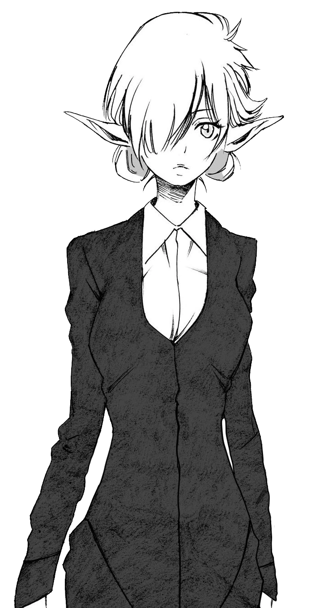

Kagali
| Title(s) | : | Curse Lord |
| Former Title(s) | : | Demon Lord |
| Former Name(s) | : | Kazalim |
| Alias / Epithet / Nickname | : | Chairman President Ex-Demon Lord |
| Host | : | Deathman, Homunculus, Human (Yuuki Kagurazaka) |
Kagali (カガリ kagari?) also known as "Curse Lord" Kazalim (カザリーム kazarīmu?), is a former Demon Lord and president of the Moderate Harlequin Alliance. Believed to have been killed by Leon Cromwell 200 years ago, Kagali survived as an Astral Body and now resides in a Homunculus. She once served as Yuuki Kagurazaka's secretary and continued to exert influence through her subordinates. Seeking power, she joined the Eastern Empire Military but fell under Lieutenant Tatsuya Kondou's control during a coup attempt against Emperor Rudra. Released from his domination upon his death, Kagali joined Michael's army while harboring traitorous intentions. She later allied with the Octagram and currently cooperates with them against Michael's forces.